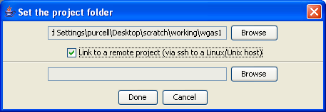

PLINK: Whole genome data analysis toolset

Setting the remote project folder
Now we instruct gPLINK that we are running in remote mode, by checking the
Link to a remote project
box once we have selected the local folder.
Previous
|
Next